| Column | Simplified | Type | Source | Description | Missing |
|---|---|---|---|---|---|
birth_date |
Yes | DATE | pipeline | Earliest of DVSA first used, registration and manufacture dates; where there is none, the DVLA first registration month, else the DVLA first DVLA registration month, else 1 July of the DVLA year of manufacture (see birth_date_source) | 0% |
birth_date_source |
No | VARCHAR | pipeline | Source of birth_date: dvsa, monthOfFirstRegistration_DVLA, monthOfFirstDvlaRegistration_DVLA or yearOfManufacture_DVLA; missing where the vehicle has no date at all | 0% |
first_use_date |
Yes | DATE | pipeline | First use date: DVSA first used, else DVLA month of first registration, else birth_date | 0% |
first_use_source |
No | VARCHAR | pipeline | Which column first_use_date came from | 0% |
firstUsedDate_DVSA |
No | DATE | Bristol (DVSA) | As supplied by DVSA | 17.69% |
registrationDate_DVSA |
No | DATE | Bristol (DVSA) | As supplied by DVSA | 0.07% |
manufactureDate_DVSA |
No | DATE | Bristol (DVSA) | As supplied by DVSA | 0.52% |
monthOfFirstRegistration_DVLA |
No | DATE | Bristol (VES) | As returned by the DVLA Vehicle Enquiry Service | 23.04% |
monthOfFirstDvlaRegistration_DVLA |
No | DATE | Bristol (VES) | As returned by the DVLA Vehicle Enquiry Service | 99% |
yearOfManufacture_DVLA |
No | INTEGER | Bristol (VES) | As returned by the DVLA Vehicle Enquiry Service | 23.24% |
first_test_date_DVSA |
No | DATE | Bristol (DVSA) | Date of the vehicle’s first MOT test, as supplied | 16.3% |
first_test_year_DVSA |
No | BIGINT | Bristol (DVSA) | Year of the vehicle’s first MOT test, as supplied | 16.3% |
final_test_date_DVSA |
No | DATE | Bristol (DVSA) | Date of the vehicle’s last recorded MOT test, from Bristol’s final_test_date_DVSA where the delivery has it. Missing for a vehicle that has never been tested; earlier deliveries supplied only lastMotTestDate_DVSA, which DVSA now fill with a future date for untested vehicles | 16.3% |
lastMotTestDate_DVSA |
No | DATE | Bristol (DVSA) | Date of the last MOT test as supplied. DVSA fill a future date for vehicles never tested; use final_test_date_DVSA | 6.28% |
final_test_year_DVSA |
No | BIGINT | Bristol (DVSA) | Year of the vehicle’s final MOT test, as supplied | 16.3% |
last_mot_year |
Yes | INTEGER | pipeline | Last MOT year: the latest year Bristol flags is_end_use; where no year is flagged, the last year with a recorded PCA, provided that is at least two years before the last year of data. Missing for vehicles still in service. Drives the dead status of pca_YYYY | 44.01% |
33 Dates and age
33.1 Overview
A vehicle has several dates that mark the start of its life: when it was made, when it was first registered, and when it was first used on the road. For most vehicles these are within weeks of each other, but they can be years apart for an import or a vehicle that sat in stock. Chapter 6 describes the stages of a vehicle’s life and how the data records them.
first_use_dateis the date to use for a vehicle’s age: the DVSA first used date, else the DVLA month of first registration, elsebirth_date.first_use_sourcerecords which.birth_dateis the earliest of the DVSA first used, registration and manufacture dates; for the few vehicles with none of these, it is taken from the DVLA dates, andbirth_date_sourcerecords which. It decides when a vehicle isunborninpca_YYYY(Chapter 35).final_test_date_DVSAis the date of the last recorded MOT test, andlast_mot_yearthe year after which the vehicle is treated asdead: no longer observed, not necessarily scrapped (Chapter 14).last_mot_yearis the last year in whichis_end_use_YYYYisTRUE(Chapter 35).- The MOT test dates as supplied are carried through unchanged:
first_test_date_DVSAandfirst_test_year_DVSAfor the first test,final_test_year_DVSAfor the last, andlastMotTestDate_DVSA. Usefinal_test_date_DVSArather thanlastMotTestDate_DVSA: DVSA put a date in the future inlastMotTestDate_DVSAfor vehicles that have never been tested. - The supplied dates (
_DVSA,_DVLA) are kept as received. The DVLA month of first registration is accurate to the month only.
How these dates are built is set out in the methodology, section 3.2, and how the last MOT test date is read in section 3.5. Other DVLA dates, such as tax due and MOT expiry, are described with the licensing status in Chapter 36.
33.2 Coverage
Because three sources are combined, first_use_date and birth_date are missing for almost no vehicles. 82% of first use dates are the DVSA first used date, 14% the DVLA month of first registration and 4% the birth date. A few dates are implausible: 123 vehicles have a first use date before 1900 or after 2026.
The coverage of the supplied dates follows their sources (Figure 33.1):
- The DVSA first used date and last test date come from the MOT history, so they are present for tested vehicles only. Coverage falls sharply for vehicles first used since 2023, most of which have not had their first MOT: 38% for 2023 and 1% for 2024. The DVSA registration and manufacture dates are present for almost every vehicle.
- The DVLA dates are present wherever a VES record was found (Chapter 36).
monthOfFirstDvlaRegistration_DVLAis different: it is present only for the 1.0% of vehicles first registered somewhere else, such as imports. - The supplied first and final test dates (
first_test_date_DVSA,first_test_year_DVSAandfinal_test_year_DVSA) are present for 84% of vehicles, those that have had an MOT test.lastMotTestDate_DVSAis present for more, 94%, because it also holds the future dates of untested vehicles. last_mot_yearis blank by design for a vehicle that is still being tested, or that was last seen in the final two years of data. Its coverage is therefore highest for old vehicles, most of which have left the road, and close to zero for new ones.
| Column | All vehicles | Before 2000 | 2000–09 | 2010–19 | 2020 on |
|---|---|---|---|---|---|
birth_date |
100.0% | 100.0% | 100.0% | 100.0% | 100.0% |
birth_date_source |
100.0% | 100.0% | 100.0% | 100.0% | 100.0% |
first_use_date |
100.0% | 100.0% | 100.0% | 100.0% | 100.0% |
first_use_source |
100.0% | 100.0% | 100.0% | 100.0% | 100.0% |
firstUsedDate_DVSA |
82.3% | 84.2% | 93.5% | 91.3% | 43.0% |
registrationDate_DVSA |
99.9% | 100.0% | 99.9% | 99.9% | 100.0% |
manufactureDate_DVSA |
99.5% | 98.2% | 99.8% | 99.7% | 99.9% |
monthOfFirstRegistration_DVLA |
77.0% | 61.9% | 64.8% | 96.3% | 82.0% |
monthOfFirstDvlaRegistration_DVLA |
1.0% | 1.2% | 1.3% | 1.1% | 0.2% |
yearOfManufacture_DVLA |
76.8% | 61.8% | 64.6% | 96.0% | 81.8% |
first_test_date_DVSA |
83.7% | 84.4% | 95.0% | 93.6% | 43.9% |
first_test_year_DVSA |
83.7% | 84.4% | 95.0% | 93.6% | 43.9% |
final_test_date_DVSA |
83.7% | 84.4% | 95.0% | 93.6% | 43.9% |
lastMotTestDate_DVSA |
93.7% | 84.4% | 96.4% | 96.2% | 95.2% |
final_test_year_DVSA |
83.7% | 84.4% | 95.0% | 93.6% | 43.9% |
last_mot_year |
56.0% | 82.4% | 82.7% | 36.9% | 10.5% |
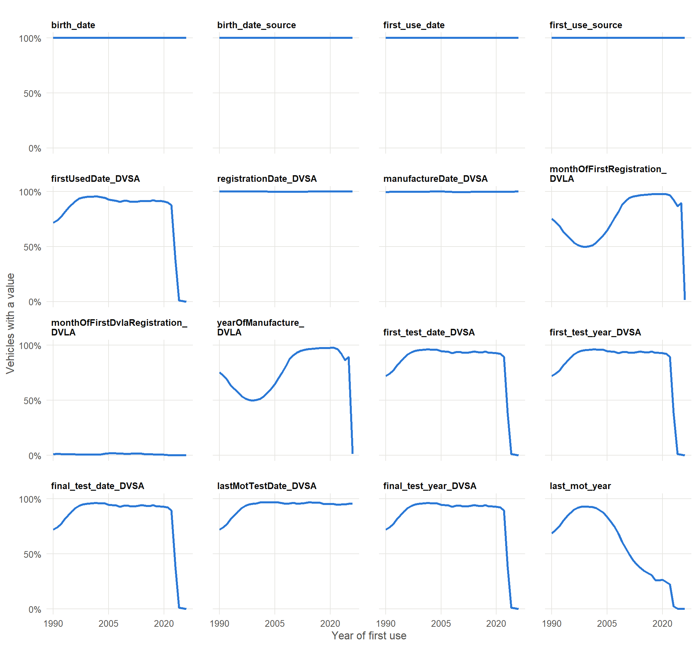
33.3 Values
How the values of each column change over time, by year of first use, from 1990. Numeric columns and dates show the minimum, lower quartile (Q1), median, upper quartile (Q3) and maximum; other columns show the share of vehicles with each value, with the less common values grouped as All other values and missing values as Blank.
birth_date
Earliest of DVSA first used, registration and manufacture dates; where there is none, the DVLA first registration month, else the DVLA first DVLA registration month, else 1 July of the DVLA year of manufacture (see birth_date_source).
birth_date_source
Source of birth_date: dvsa, monthOfFirstRegistration_DVLA, monthOfFirstDvlaRegistration_DVLA or yearOfManufacture_DVLA; missing where the vehicle has no date at all.
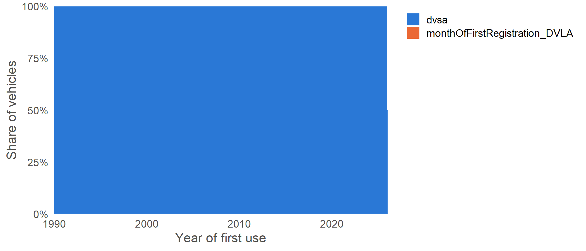
first_use_date
First use date: DVSA first used, else DVLA month of first registration, else birth_date.
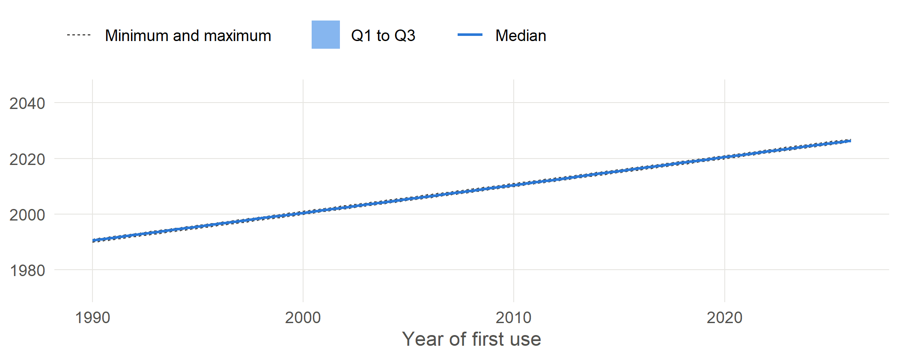
first_use_source
Which column first_use_date came from.
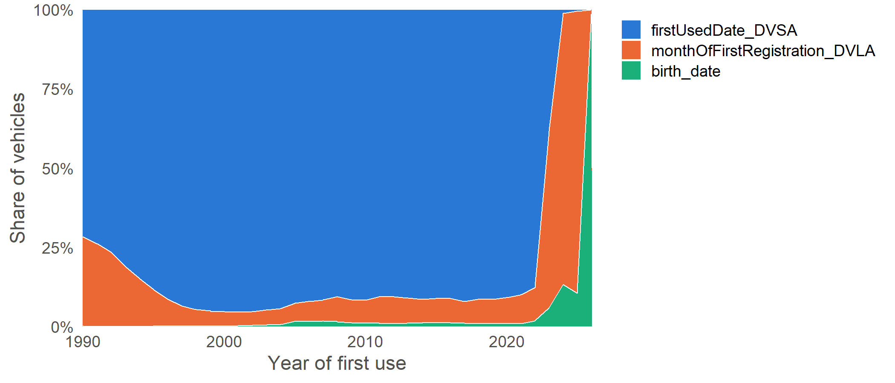
firstUsedDate_DVSA
As supplied by DVSA.
registrationDate_DVSA
As supplied by DVSA.
manufactureDate_DVSA
As supplied by DVSA.
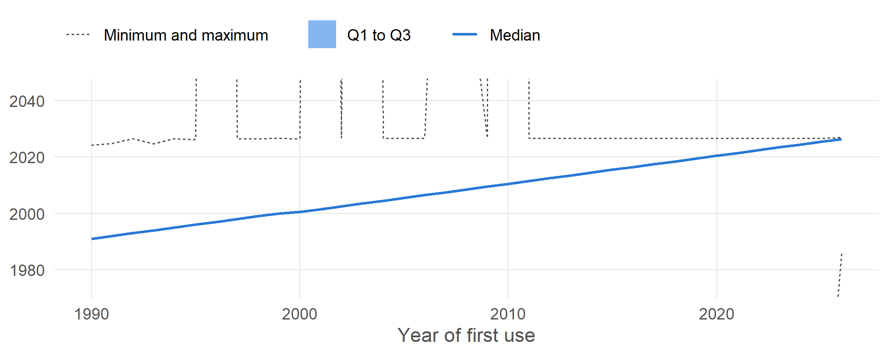
monthOfFirstRegistration_DVLA
As returned by the DVLA Vehicle Enquiry Service.
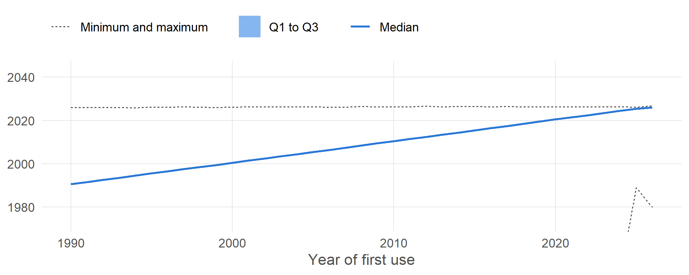
monthOfFirstDvlaRegistration_DVLA
As returned by the DVLA Vehicle Enquiry Service.
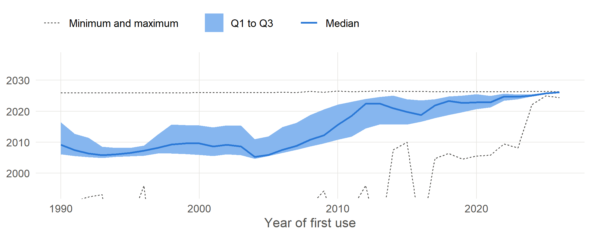
yearOfManufacture_DVLA
As returned by the DVLA Vehicle Enquiry Service.
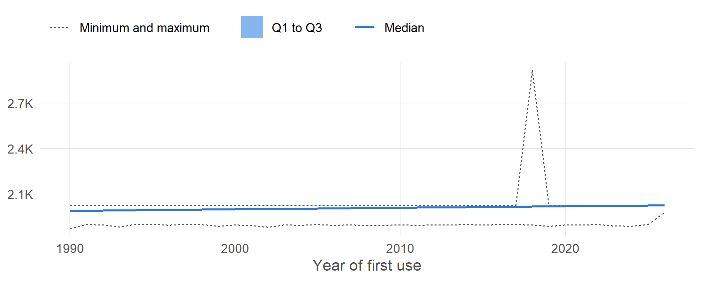
first_test_date_DVSA
Date of the vehicle’s first MOT test, as supplied.
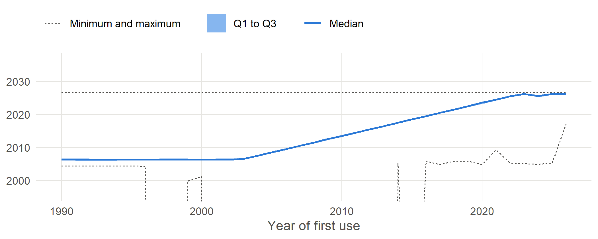
first_test_year_DVSA
Year of the vehicle’s first MOT test, as supplied.
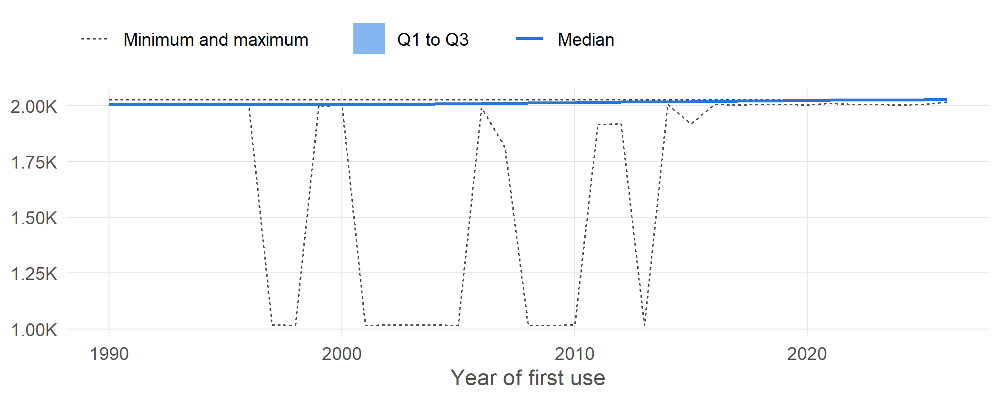
final_test_date_DVSA
Date of the vehicle’s last recorded MOT test, from Bristol’s final_test_date_DVSA where the delivery has it. Missing for a vehicle that has never been tested; earlier deliveries supplied only lastMotTestDate_DVSA, which DVSA now fill with a future date for untested vehicles.
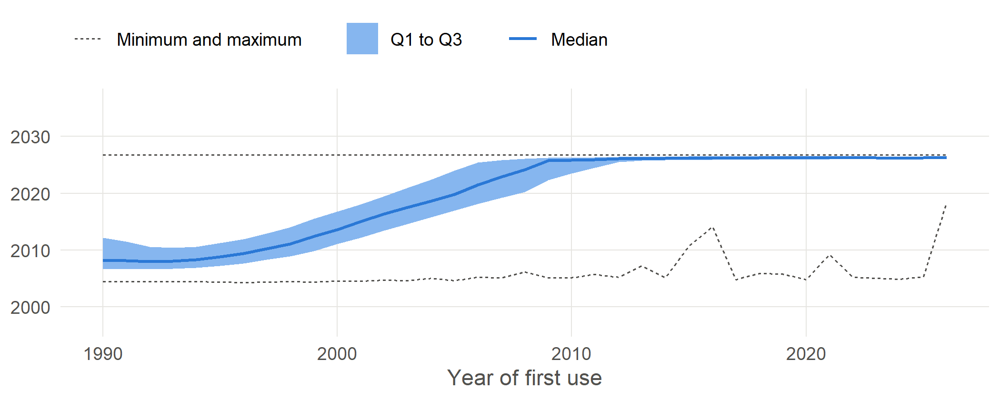
lastMotTestDate_DVSA
Date of the last MOT test as supplied. DVSA fill a future date for vehicles never tested; use final_test_date_DVSA.
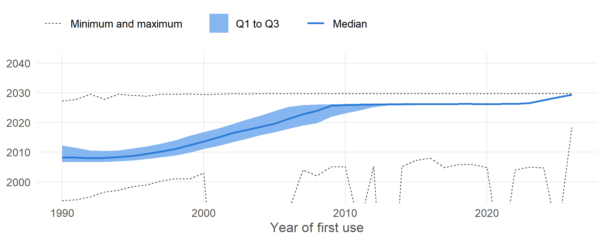
final_test_year_DVSA
Year of the vehicle’s final MOT test, as supplied.
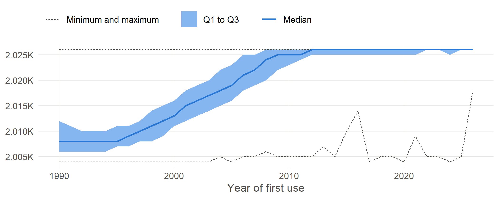
last_mot_year
Last MOT year: the latest year Bristol flags is_end_use; where no year is flagged, the last year with a recorded PCA, provided that is at least two years before the last year of data. Missing for vehicles still in service. Drives the dead status of pca_YYYY.
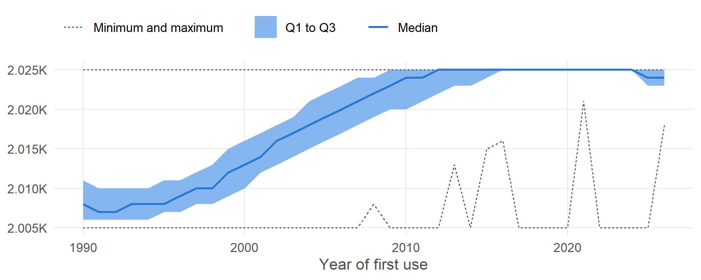